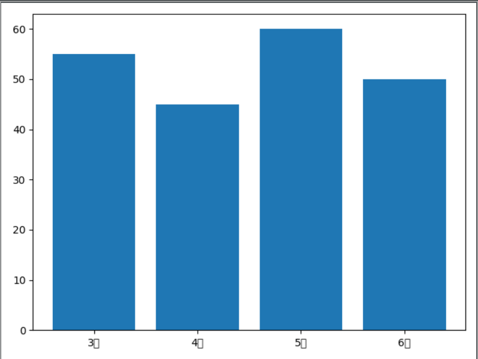
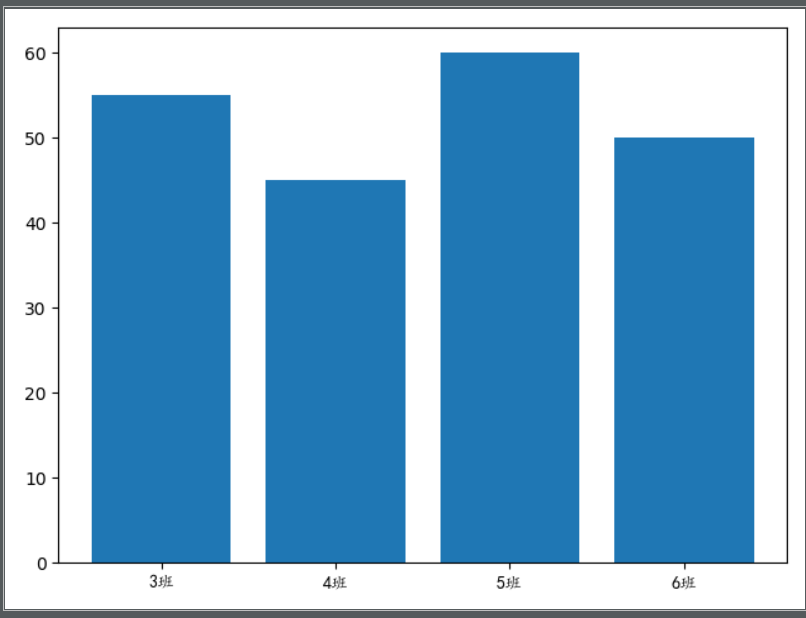
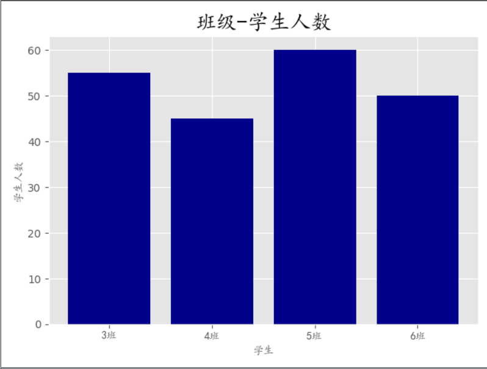
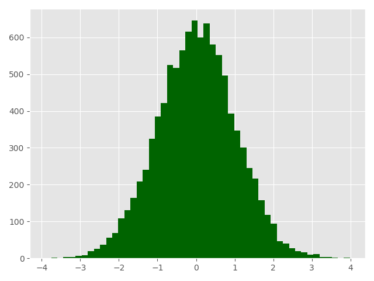
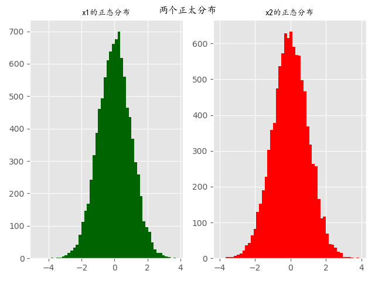
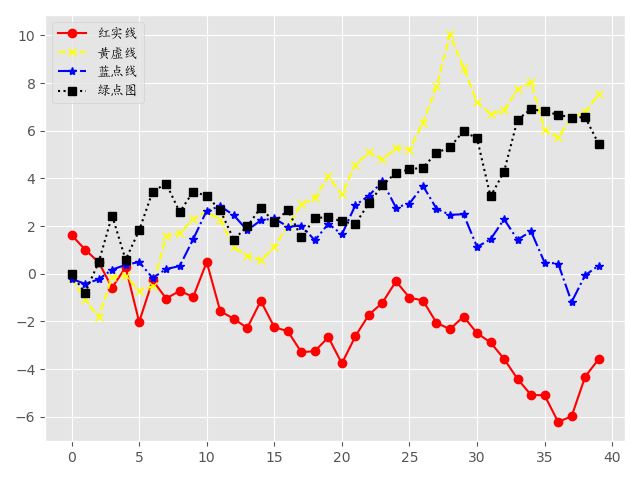
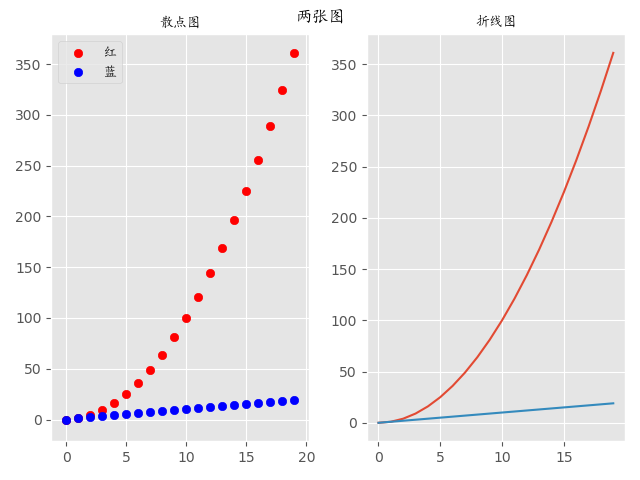

numpy官方文档：https://docs.scipy.org/doc/numpy/reference/?v=20190307135750
numpy是Python的一种开源的数值计算扩展库。这种库可用来存储和处理大型numpy数组，比Python自身的嵌套列表结构要高效的多（该结构也可以用来表示numpy数组）。
numpy库有两个作用：
import numpy as np
lt1 = [1,2,3]
lt2 = [4,5,6]
arry1 = np.array(lt1)
arry2 = np.array(lt2)
print(arry1*arry2) # [ 4 10 18] 创建numpy数组
# 一维数组
arr1 = np.array([1,2,4])
print(type(arr1), arr1) # <class 'numpy.ndarray'> [1 2 4]
# 二维数组
arr = np.array([
[1,2,3],
[4,5,6]
])
print(arr)
'''
[[1 2 3]
[4 5 6]]
'''
# 三维数组
arr = np.array([
[[1, 2, 3],
[4, 5, 6]],
[[1, 2, 3],
[4, 5, 6]]
])
print(arr)
'''
[[[1 2 3]
[4 5 6]]
[[1 2 3]
[4 5 6]]]
'''numpy数组的常用属性
| 属性 | 解释 |
|---|---|
| T | 数组的转置（对高维数组而言） |
| dtype | 数组元素的数据类型 |
| size | 数组元素的个数 |
| ndim | 数组的维数 |
| shape | 数组的维度大小（以元组形式） |
| astype | 类型转换 |
dtype 数组元素的数据类型，numpy数组是属于python解释器的，int32 / float64 属于numpy
# 转置
arr = np.array([
[1, 2, 3],
[4, 5, 6]
])
print(f'arr的转置为\n{arr.T}')
'''
arr的转置为
[[1 4]
[2 5]
[3 6]]
'''
# dtype数据类型
arr = np.array([
[1., 2., 3.],
[4, 5, 6]
])
print(arr.dtype) # float64
# 数组元素的个数
print(arr.size) # 6
# 数组的维数
print(arr.ndim) # 2
# 数组的维度大小（以元组形式， 几行几列）
print(arr.shape) # （2，3）
# 数组类型转换
arr = np.array([
[1, 2, 3],
[4, 5, 6]
])
res = arr.astype(np.float64)
print(res)
'''
[[1. 2. 3.]
[4. 5. 6.]]
'''切割numpy数组
切分数组类似于列表的切割，numpy数组的切割涉及到行和列的切割
arr = np.array([
[1, 2, 3],
[4, 5, 6]
])
print(arr[:,:]) # 行；列 取整个数组
print(arr[0,0]) # 取第一行第一列，1
print(arr[0,:]) # 取第一行 [1 2 3]
print(arr[:,2:]) # 取第三列
'''
[[3]
[6]]
'''赋值
arr = np.array([
[1, 2, 3],
[4, 5, 6]
])
arr[0,0] = 0
print(arr) # 将二维数组第一行第一列元素赋值为0
arr[:,:] = 0
print(arr) # 全部换为0
'''
[[0 0 0]
[0 0 0]]
'''元组合并
# 水平合并
arr1 = np.array([
[1, 2, 3],
[4, 5, 6]
])
arr2 = np.array([
[7, 8, 9],
['a', 'b', 'c']
])
print(np.hstack((arr1,arr2))) # 只能放元组
'''
[['1' '2' '3' '7' '8' '9']
['4' '5' '6' 'a' 'b' 'c']]
'''
# 垂直合并
print(np.vstack((arr1, arr2)))
'''
[['1' '2' '3']
['4' '5' '6']
['7' '8' '9']
['a' 'b' 'c']]
'''
print(np.concatenate((arr1, arr2))) # 默认以列合并
'''
[['1' '2' '3']
['4' '5' '6']
['7' '8' '9']
['a' 'b' 'c']]
'''
print(np.concatenate((arr1, arr2), axis=1)) # 以行合并
'''
[['1' '2' '3' '7' '8' '9']
['4' '5' '6' 'a' 'b' 'c']]
'''通过函数创建数组
| 方法 | 详解 |
|---|---|
| array() | 将列表转换为数组，可选择显式指定dtype |
| arange() | range的numpy版，支持浮点数 |
| linspace() | 类似arange()，第三个参数为数组长度 |
| zeros() | 根据指定形状和dtype创建全0数组 |
| ones() | 根据指定形状和dtype创建全1数组 |
| eye() | 创建单位矩阵 |
| empty() | 创建一个元素全随机的数组 |
| reshape() | 重塑形状 |
ones / zeros / eye / empty
# ones
print(np.ones((2,3))) # 构建两行三列的1
'''
[[1. 1. 1.]
[1. 1. 1.]]
'''
# zeros
print(np.zeros((2,3))) # 创建2行3列的0
'''
[[0. 0. 0.]
[0. 0. 0.]]
'''
# eye
print(np.eye(3,3)) # 创建单位矩阵
'''
[[1. 0. 0.]
[0. 1. 0.]
[0. 0. 1.]]
'''
# empty
print(np.empty((2,2))) # 创建一个2行2列的数组，里面的元素是随机生成的
'''
[[1.42419938e-306 9.34609790e-307]
[1.29060871e-306 7.56601165e-307]]
'''linspace / logspace
print(np.linspace(1,100,10)) # 创建一个等差数列，1-100，有10个数
# [ 1. 12. 23. 34. 45. 56. 67. 78. 89. 100.]
print(np.logspace(1,10,5)) # 创建等比数列、
# [1.00000000e+01 1.77827941e+03 3.16227766e+05 5.62341325e+07 1.00000000e+10]arrange
print(np.arange(2,10))
# [2 3 4 5 6 7 8 9]
print(np.arange(2,10,2)) # 2-10，步长为2的数组
# [2 4 6 8]reshape 重构形状
arr = np.ones([2,2]) # 本来是2*2的1
# print(arr)
print(arr.reshape(1,4)) # 变成1*4的1
# [[1. 1. 1. 1.]]数组运算
| 运算符 | 说明 |
|---|---|
| + | 两个numpy数组对应元素相加 |
| - | 两个numpy数组对应元素相减 |
| * | 两个numpy数组对应元素相乘 |
| / | 两个numpy数组对应元素相除，如果都是整数则取商 |
| % | 两个numpy数组对应元素相除后取余数 |
| **n | 单个numpy数组每个元素都取n次方，如**2：每个元素都取平方 |
arr = np.array([
[3, 4, 56],
[12, 4, 25]
])
print(arr / 2)
'''
[[ 1.5 2. 28. ]
[ 6. 2. 12.5]]
'''
arr = np.array([
[3, 4, 56],
[12, 4, 25]
])
print(arr ** 2)
'''
[[ 9 16 3136]
[ 144 16 625]]
'''numpy数组函数运算
| numpy数组函数 | 详解 |
|---|---|
| np.sin(arr) | 对numpy数组arr中每个元素取正弦，sin(x)sin(x) |
| np.cos(arr) | 对numpy数组arr中每个元素取余弦，cos(x)cos(x) |
| np.tan(arr) | 对numpy数组arr中每个元素取正切，tan(x)tan(x) |
| np.arcsin(arr) | 对numpy数组arr中每个元素取反正弦，arcsin(x)arcsin(x) |
| np.arccos(arr) | 对numpy数组arr中每个元素取反余弦，arccos(x)arccos(x) |
| np.arctan(arr) | 对numpy数组arr中每个元素取反正切，arctan(x)arctan(x) |
| np.exp(arr) | 对numpy数组arr中每个元素取指数函数，exex |
| np.sqrt(arr) | 对numpy数组arr中每个元素开根号x−−\(\sqrt[2]{x}\) |
arr = np.array([
[3, 4, 56],
[12, 4, 25]
])
print(np.sin(arr))
'''
[[ 0.14112001 -0.7568025 -0.521551 ]
[-0.53657292 -0.7568025 -0.13235175]]
'''numpy.random生成随机数
| 函数名称 | 函数功能 | 参数说明 |
|---|---|---|
| rand(d0,d1,⋯,dnd0,d1,⋯,dn) | 产生均匀分布的随机数 | dndn为第n维数据的维度 |
| randn(d0,d1,⋯,dnd0,d1,⋯,dn) | 产生标准正态分布随机数 | dndn为第n维数据的维度 |
| randint(low[, high, size, dtype]) | 产生随机整数 | low:最小值；high:最大值；size:数据个数 |
| random_sample([size]) | 在[0,1)[0,1)内产生随机数 | size为随机数的shape，可以为元祖或者列表 |
| choice(a[, size]) | 从arr中随机选择指定数据 | arr为1维数组；size为数组形状 |
| uniform(low,high [,size]) | 给定形状产生随机数组 | low为最小值；high为最大值，size为数组形状 |
| shuffle(a) | 与random.shuffle相同 | a为指定数组 |
初始的:
from matplotlib import pyplot as plt
classes = ['3班', '4班', '5班', '6班']
students = [55, 45, 60, 50]
plt.bar(classes, students)
plt.show()
from matplotlib import pyplot as plt
from matplotlib.font_manager import FontProperties # 修改字体
font = FontProperties(fname='C:\Windows\Fonts\simkai.ttf') # 中文字体
classes = ['3班', '4班', '5班', '6班']
students = [55, 45, 60, 50]
classes_index = range(len(classes))
plt.bar(classes_index, students)
plt.xticks(classes_index, classes, FontProperties=font)
plt.show()
from matplotlib import pyplot as plt
from matplotlib.font_manager import FontProperties # 修改字体
font = FontProperties(fname='C:\Windows\Fonts\simkai.ttf') # 中文字体
plt.style.use('ggplot') # 设置背景条纹
classes = ['3班', '4班', '5班', '6班']
students = [55, 45, 60, 50]
classes_index = range(len(classes))
plt.bar(classes_index, students, color='darkblue')
plt.xlabel('学生', FontProperties=font)
plt.ylabel('学生人数', FontProperties=font)
plt.title('班级-学生人数', FontProperties=font, fontsize=20, fontweight=25)
plt.xticks(classes_index, classes, FontProperties=font) # 将x轴坐标替换成classes
plt.show()
import numpy as np
from matplotlib import pyplot as plt
from matplotlib.font_manager import FontProperties # 修改字体
font = FontProperties(fname='C:\Windows\Fonts\simkai.ttf') # 中文字体
# 修改背景为条纹
plt.style.use('ggplot')
x1 = np.random.randn(10000) # 随机生成符合正太分布的数
x2 = np.random.randn(10000)
plt.hist(x1, bins=50, color='darkgreen') # bins=50表示每个变量的值分成50份，即会有50根柱子
plt.show()
# 直方图
import numpy as np
from matplotlib import pyplot as plt
from matplotlib.font_manager import FontProperties # 修改字体
font = FontProperties(fname='C:\Windows\Fonts\simkai.ttf') # 中文字体
# 修改背景为条纹
plt.style.use('ggplot')
x1 = np.random.randn(10000) # 随机生成符合正太分布的数
x2 = np.random.randn(10000)
fig = plt.figure() # 生成一张画布
ax1 = fig.add_subplot(1,2,1) # 一行两列取第一个
ax2 = fig.add_subplot(1,2,2) # 一行两列取第二个
ax1.hist(x1, bins=50, color='darkgreen') # bins=50表示每个变量的值分成50份，即会有50根柱子
ax2.hist(x2, bins=50, color='red')
# 大标题
fig.suptitle('两个正太分布', FontProperties=font)
# 添加子标题
ax1.set_title('x1的正态分布', FontProperties=font)
ax2.set_title('x2的正态分布', FontProperties=font)
plt.show()
# 折线图
import numpy as np
from matplotlib import pyplot as plt
from matplotlib.font_manager import FontProperties # 修改字体
font = FontProperties(fname='C:\Windows\Fonts\simkai.ttf') # 中文字体
# 修改背景为条纹
plt.style.use('ggplot')
np.random.seed(1)
# 使用numpy的累加和，保证数据取值范围不会在（0，1）内波动
x1 = np.random.randn(40).cumsum()
x2 = np.random.randn(40).cumsum()
x3 = np.random.randn(40).cumsum()
x4 = np.random.randn(40).cumsum()
plt.plot(x1, color='red', marker='o', linestyle='-', label='红实线')
plt.plot(x2, color='yellow', marker='x', linestyle='--', label='黄虚线')
plt.plot(x3, color='blue', marker='*', linestyle='-.', label='蓝点线')
plt.plot(x4, color='black', marker='s', linestyle=':', label='绿点图')
# loc='best'给label自动选择最好的位置
plt.legend(loc='best', prop=font)
plt.show()
# 散点图
import numpy as np
from matplotlib import pyplot as plt
from matplotlib.font_manager import FontProperties # 修改字体
font = FontProperties(fname='C:\Windows\Fonts\simkai.ttf')
plt.style.use('ggplot')
# fig = plt.figure(figsize=(10,20)) # 控制画布大小
fig = plt.figure()
ax1 = fig.add_subplot(1,2,1)
ax2 = fig.add_subplot(1,2,2)
x1 = np.arange(20)
y1 = x1 ** 2
x2 = np.arange(20)
y2 = x2
ax1.scatter(x1, y1, color='red', label='红')
ax1.scatter(x2, y2, color='blue', label='蓝')
ax2.plot(x1,y1)
ax2.plot(x2,y2)
fig.suptitle('两张图', FontProperties=font)
ax1.set_title('散点图', FontProperties=font)
ax2.set_title('折线图', FontProperties=font)
ax1.legend(prop=font)
plt.show()
pandas中有两个主要的数据结构，其中Series数据结构类似于Numpy中的一维数组，DataFrame类似于多维表格数据结构。
pandas是python数据分析的核心模块。它主要提供了五大功能:
import pandas as pd
index = pd.date_range('2019-01-01', periods=6, freq='M')
print(index)
'''
DatetimeIndex(['2019-01-31', '2019-02-28', '2019-03-31', '2019-04-30',
'2019-05-31', '2019-06-30'],
dtype='datetime64[ns]', freq='M')
'''import numpy as np
import pandas as pd
index = pd.date_range('2019-01-01', periods=6, freq='M')
columns = ['c1','c2','c3','c4']
# print(columns)
val = np.random.randn(6, 4)
# print(val)
df = pd.DataFrame(index=index, columns=columns, data=val)
# 保存文件，读出文件
df.to_excel('data.xls')
# 读出文件
df = pd.read_excel('data.xls', index_col=[0])
print(df)
'''
c1 c2 c3 c4
2019-01-31 -1.469848 -0.875899 -0.571439 0.274287
2019-02-28 0.783315 -0.333277 0.091470 1.484056
2019-03-31 0.611354 0.565803 -1.298068 0.666117
2019-04-30 -0.892975 -0.144261 -2.596248 1.103916
2019-05-31 -1.207643 -0.475502 -1.577926 -0.373518
2019-06-30 -0.233937 -1.492533 -0.207368 0.163620
'''
print(df.index)
'''
DatetimeIndex(['2019-01-31', '2019-02-28', '2019-03-31', '2019-04-30',
'2019-05-31', '2019-06-30'],
dtype='datetime64[ns]', freq=None)
'''
print(df.columns)
'''
Index(['c1', 'c2', 'c3', 'c4'], dtype='object')
'''
print(df[['c1', 'c2']])
# 按照index取值
print(df.loc['2019-01-31'])
'''
c1 -0.511065
c2 0.173715
c3 0.460645
c4 -0.105340
Name: 2019-01-31 00:00:00, dtype: float64
'''
# 按照values取值
print(df.iloc[0,1])
'''
-0.515215674883499
'''
df.iloc[0,:] = 0
print(df)
'''
c1 c2 c3 c4
2019-01-31 0.000000 0.000000 0.000000 0.000000
2019-02-28 -0.473829 0.647171 -1.026075 -0.630721
2019-03-31 1.112496 2.454119 -0.339265 0.600856
2019-04-30 -0.264615 -0.035386 -0.717795 0.320868
2019-05-31 -0.638794 -0.926775 0.247402 -0.824648
2019-06-30 -0.100243 -1.077409 -1.063229 -1.314213
'''